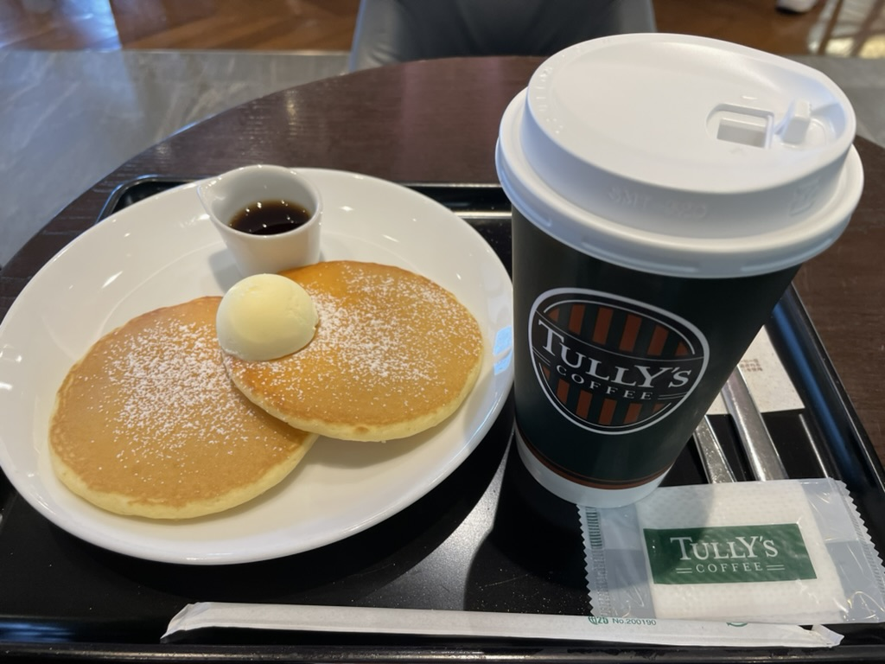

Code
# 安装 ellmer 包
install.packages("ellmer")
ellmer 是一个功能强大且灵活的 R 包，旨在简化大语言模型（LLM）的使用。 它支持广泛的 LLM 提供商，并包含丰富的功能，如流式输出、工具/函数调用和结构化数据提取。 这使其成为将先进的 AI 功能集成到您的 R 项目中的绝佳选择。
首先，从 CRAN 安装 ellmer 包。
# 安装 ellmer 包
install.packages("ellmer")将 ellmer 和 keyring 包加载到您的 R 会话中。keyring 用于安全地管理 API 密钥。
# 加载所需的库
library(ellmer)
library(keyring)本节演示如何将 ellmer 与 Google 的 Gemini 模型结合使用。
首先，创建一个 Gemini 聊天模型的实例，提供您的 API 密钥并指定要使用的模型。
# 设置 Google Gemini 聊天模型
chat_gemini_model <- chat_google_gemini(
api_key = key_get("google_ai_api_key"),
model = "gemini-1.5-flash"
)
chat_gemini_model模型初始化后，您就可以开始聊天并生成文本。
# 从模型生成回应
result <- chat_gemini_model$chat("给我讲三个关于统计学家的笑话")
resultellmer 提供了交互模式，以获得更具对话性的体验。
您可以启动一个基于 Web 的界面与模型聊天。
# 在网页浏览器中打开交互式聊天会话
live_browser(chat_gemini_model)或者，您可以直接在 R 控制台中与模型聊天。
# 在控制台中启动交互式聊天会话
live_console(chat_gemini_model)您可以提供系统提示来引导模型的行为和语气。
# 定义一个系统提示
system_prompt <- "你是一位IT专家"
system_prompt# 使用系统提示初始化模型
chat_gemini_model_expert <- chat_google_gemini(
system_prompt = system_prompt,
api_key = key_get("google_ai_api_key"),
model = "gemini-1.5-flash"
)
chat_gemini_model_expertellmer 还支持可以分析图像的多模态模型。

首先，将图像文件上传到 Google API。
# 上传一个图像文件
file <- google_upload(
path = "coffee.jpeg",
api_key = key_get("google_ai_api_key")
)然后，您可以要求模型描述或分析该图像。
# 要求模型总结图像内容
chat_gemini_model$chat(file, "请用三段话总结一下这张图片的内容")ellmer 还支持更高级的功能，如结构化输出和工具调用，这些功能可以实现更复杂、更强大的应用程序。
ellmer 是一个全面且用户友好的 R 包，用于处理大语言模型。其广泛的功能、对多个提供商的支持以及易用性，使其成为希望将 LLM 的强大功能融入其数据分析和应用程序的 R 用户的宝贵工具。